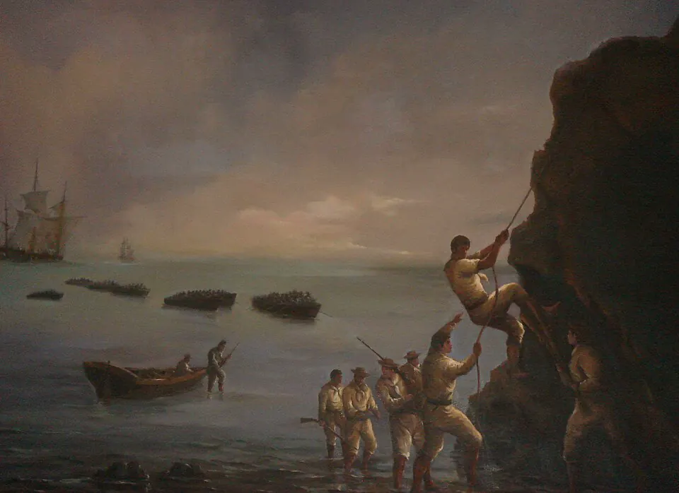

Toma de Valdivia

Tras la Batalla de Maipú, el sur seguía siendo un foco realista y Valdivia, con su poderoso sistema de fuertes, era su principal plaza. A comienzos de 1820, Lord Cochrane, vicealmirante de la escuadra chilena, decidió atacarla con pocos barcos y una fuerza de desembarco en la que participó el oficial francés Jorge Beauchef. En la tarde del 3 de febrero, las tropas desembarcaron en la Aguada del Inglés y, durante la noche, tomaron por sorpresa los fuertes de la costa sur de la bahía, como Amargos y Corral. Al día siguiente cayeron los restantes y los realistas abandonaron la ciudad.
La acción, audaz y de bajo costo, eliminó una base realista clave, aportó armas y pertrechos y elevó la moral patriota antes de la expedición libertadora del Perú, que zarpó de Valparaíso en agosto de 1820. Poco después, Cochrane intentó tomar Chiloé sin éxito: el archipiélago se mantuvo realista hasta la Incorporación de Chiloé, en 1826.
Versión para niños
En 1820, Valdivia seguía en manos de los realistas y estaba protegida por muchos fuertes con cañones. Parecía imposible tomarla. Pero el marino escocés Lord Cochrane, que dirigía la escuadra chilena, preparó un plan muy audaz. Desembarcó con sus soldados al atardecer y, durante la noche, atacó los fuertes uno por uno. En dos días, los patriotas tomaron el control de la bahía y después entraron a la ciudad.
Para maestros
Nivel sugerido: 6° básico
Objetivo: Reconocer el papel de la escuadra nacional en la independencia y explicar por qué el control del mar era clave para Chile.
Preguntas para la clase:
- ¿Por qué Valdivia era tan importante para los realistas?
- ¿Qué ventajas tenía atacar de noche y por sorpresa?
- ¿Por qué Chile necesitaba una escuadra para asegurar su independencia?
Actividad (20–30 min): Con un plano de la bahía de Corral, los estudiantes reconstruyen paso a paso la ruta del ataque y la comparan con la función original de los fuertes construidos desde 1645. Cierran escribiendo un breve titular de prensa sobre la toma.
Fuentes sugeridas: Memoria Chilena; Museo Histórico Nacional; Biblioteca Nacional Digital.
Objetivos de Aprendizaje (Currículum Nacional)
- 6° básico · HI06 OA 02 Explicar el desarrollo del proceso de independencia de Chile … avances y retrocesos de la causa patriota
- 8° básico · HI08 OA 16 Explicar la independencia de las colonias hispanoamericanas como un proceso continental … y analizar en este marco el proceso de Independencia de Chile
Personajes
Revisión humana pendiente. Cómo se revisa · Reportar un error
Cómo citar: Historia de Chile. (2026). Toma de Valdivia. En Historia de Chile: atlas y línea de tiempo. https://moises-salgado.github.io/historia-de-chile/momento/toma-de-valdivia.html